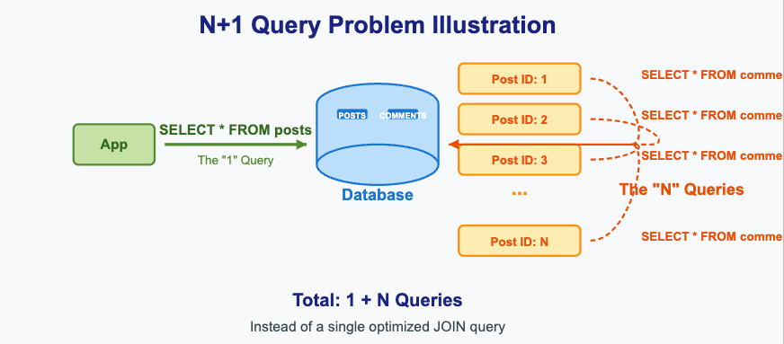
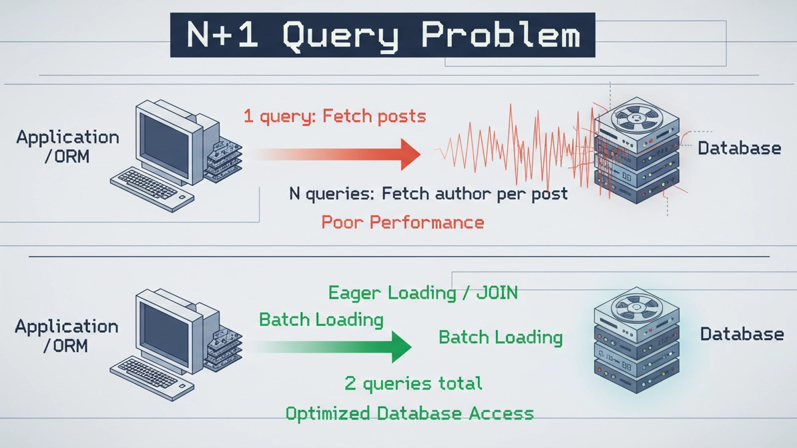
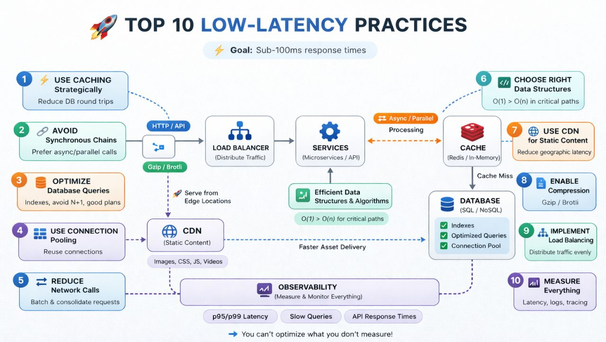

System Design Mastery
Master scalable systems with premium insights
⚡ Reducing Latency in Distributed Systems
👉 Interviewer asks:
How do you reduce latency in a distributed system?
1️⃣ Use Caching Strategically
- Cache frequently accessed data (in-memory or distributed)
- Avoid repeated DB calls
👉 Example: User profile, product catalog
2️⃣ Load Balancing
- Distribute traffic across multiple servers or services
👉 Prevents overload and reduces response time
3️⃣ Connection Pooling
- Reuse DB connections instead of creating new ones
👉 Saves time + improves performance
4️⃣ Choose the Right Data Store
- Use SQL for consistency
- Use NoSQL for speed & scalability
👉 Example: Use key-value stores for fast lookups
5️⃣ Choose Efficient Data Structures
- Use the right algorithms and data structures
👉 Prefer O(1) or O(log n) over O(n) in critical paths
6️⃣ Data Indexing is a Must
- Index frequently queried fields
- Reduces query time from seconds → milliseconds
👉 Example: Indexing the user_id, short_url
7️⃣ Use Content Delivery Networks (CDNs)
- Serve static content closer to users
👉 Reduces latency globally
8️⃣ Enable Compression
- Use gzip or Brotli to shrink payload size
👉 Faster data transfer over the network
9️⃣ Optimize Database Queries
- Avoid SELECT *
- Use pagination (Limit, offset)
- Optimize joins
- Avoid N+1 queries problem
👉 Faster queries = lower latency
🚫 What is the N+1 Query Problem?
Doing repeated DB calls for the same data
The N+1 query problem happens when your code executes:
- 1 query to fetch a list of items
- Then N additional queries (one per item)
- 👉 Total = 1 + N queries → causes serious latency issues
Doing work again and again inside a loop instead of doing it once.
Let's say:
Step 1:
SELECT * FROM students;
👉 returns 5 students (N = 5)
Step 2:
SELECT * FROM marks WHERE student_id = 1;
SELECT * FROM marks WHERE student_id = 2;
SELECT * FROM marks WHERE student_id = 3;
SELECT * FROM marks WHERE student_id = 4;
SELECT * FROM marks WHERE student_id = 5;
👉 Now total queries:
- 1 (students)
- 5 (marks)
- 👉 = 6 queries → N + 1 problem
N+1 happens when we fetch a list using one query and then execute additional queries for each item. This leads to multiple database calls and high latency.

Figure 1: N+1 Query Problem Illustration
✅ How to Fix It
1️⃣ Use JOINs (Best for SQL)
SELECT users.*, orders.*
FROM users
LEFT JOIN orders ON users.id = orders.user_id;
👉 Fetch everything in one query
2️⃣ Use IN Query (Batch Fetching)
SELECT * FROM orders
WHERE user_id IN (1, 2, 3, 4, ...);
👉 Reduces N queries → just 2 queries total
3️⃣ Use Eager Loading (ORM Fix)
Instead of lazy loading:
❌ Bad (Lazy Loading)
users = get_users()
for user in users:
user.orders # triggers query every time
✅ Good (Eager Loading)
users = get_users_with_orders()
👉 ORM fetches related data in advance

Figure 2: ORM Eager Loading vs Lazy Loading
🔟 Asynchronous Processing
- Don't block user requests
- Use queues (Kafka, RabbitMQ)
👉 Example: Send emails in background
1️⃣1️⃣ Reduce Network Calls
- Combine APIs (batching)
- Avoid unnecessary round trips
👉 Example: Fetch all dashboard data in one request
👉 Every time your app talks to a server, it takes time
(Network travel + processing + response)
👉 If you make many small requests, latency increases
❌ Bad Approach (Too Many Calls)
Example: Dashboard screen
- Call 1 → Get user info
- Call 2 → Get notifications
- Call 3 → Get recent orders
- Call 4 → Get analytics
- 👉 Total = 4 network calls → slower response 😬
✅ Good Approach (Batching / Single Call)
👉 Combine everything into one API:
Call 1 → /dashboard-data
- user info
- notifications
- orders
- analytics
- 👉 Total = 1 network call → faster 🚀
1️⃣2️⃣ Monitor & Optimize Continuously
Use tools like:
- Prometheus
- Grafana
- New Relic
👉 Measure Latency percentiles (p95, p99), then improve it

Figure 3: Monitoring Dashboard with Latency Percentiles
📋 Summary: 12 Techniques to Reduce Latency
| Technique | Benefit |
|---|---|
| 1. Caching | Avoid repeated DB calls |
| 2. Load Balancing | Distribute traffic, prevent overload |
| 3. Connection Pooling | Reuse connections, save time |
| 4. Right Data Store | SQL for consistency, NoSQL for speed |
| 5. Efficient Data Structures | Prefer O(1) or O(log n) |
| 6. Data Indexing | Reduce query time |
| 7. CDN | Serve content closer to users |
| 8. Compression | Faster data transfer |
| 9. Query Optimization | Avoid SELECT *, fix N+1 problem |
| 10. Async Processing | Don't block user requests |
| 11. Reduce Network Calls | Combine APIs, batch requests |
| 12. Monitoring | Measure p95, p99, continuously optimize |
🧠 Interview Tips
- Categorize your answers — Client-side, Server-side, Network-level
- Know the N+1 problem — Very common interview question
- Mention monitoring — p95, p99 percentiles show real user experience
- Trade-offs matter — Caching vs consistency, Async vs immediacy
- Start with biggest impact — Caching and CDN usually give most benefit